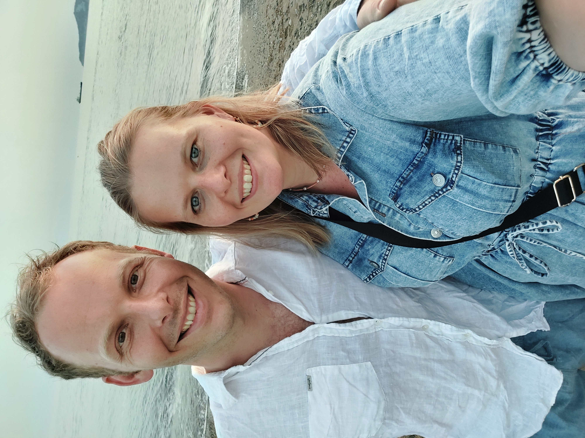

Ik ben Jolijn de Roest, 34 jaar en woonachtig in Hendrik-Ido-Ambacht.
Ik woon hier samen met mijn vriend Rens, Laurens van 2 en Lukas van bijna 1
We hebben 2 katten en 5 kippen
Op deze website kunt u verschillende pagina's vinden, zie het menu
